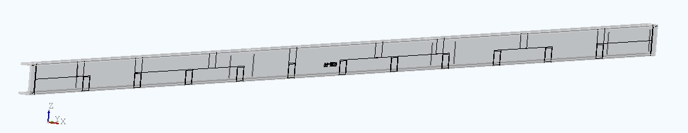
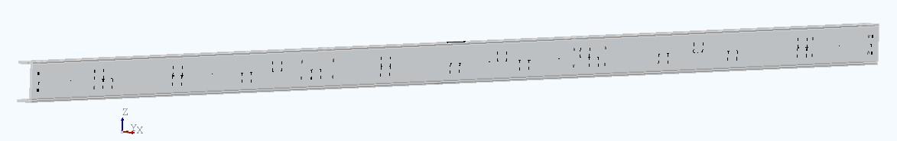
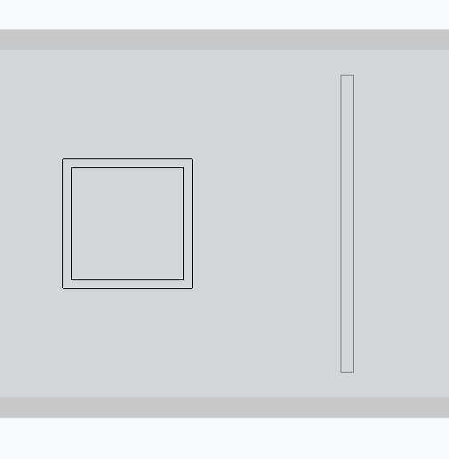
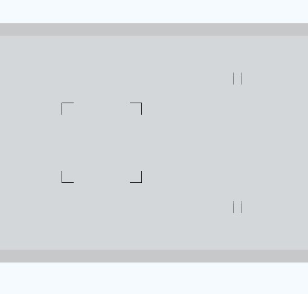

Introduction
NC files (often called DSTV files) sent to fabrication can easily be inefficient. Machines are often forced to process unnecessary marking data — running duplicate passes, following overly detailed contours, and attempting marks that shouldn’t exist in the first place.
The result is predictable: longer production times, increased tool wear, and unnecessary intervention from machinists on the shop floor. The fix is simple: strip away any unneeded data from the file — it only needs the information required to fabricate and weld correctly, nothing else.
This post breaks down what a DSTV file controls in a beam line machine, and how to optimize it to immediately reduce fabrication time and machine wear.
הקדמה


Deep Dive: What DSTV Actually Carries
DSTV files are machine instruction files used primarily for beam profile processing. They define everything the machine needs to perform cutting, drilling, and marking operations on structural members. Plates are typically handled separately using a DXF format.
For this discussion, two elements matter:
- Scribing — marking lines or points on the material to guide welding and assembly
- Hardstamp — the physical imprint used to identify the part
Scribing is typically executed in one of two ways (or both):
- Punching — a physical scratch or dent madeby the machine tool
- Powdering — a visual marking applied with paint or powder
In practice, most fabrication shops use only one of these methods, usually punching. However, many DSTV files include both — which leads directly to inefficiency.
צלילה עמוקה: מה באמת קיים בקובץ DSTV
The Problem
Common problems in DSTV files include:
- Full geometry being scribed instead of only essential marks
- Long, continuous marking paths
- Redundant contours that do not contribute to fabrication
- Hardstamps missing or not placed correctly for smooth fabrication
- Markings placed too close to edges or in areas the machine tool cannot reach
Depending on the machine, these issues result in either errors or silent failures where markings are skipped. In both cases, machinists often step in to manually adjust marks, reposition hardstamps, or remove unnecessary lines. All of this is avoidable with properly prepared NC files.
הבעיה
Punching vs Powdering
Each manufacturer has its own preferred marking method. Most use punching because it is simpler and requires less setup, while some use powdering or a combination of both. The important thing is that the method is clearly defined and enforced in the NC files. A common issue is when this is overlooked.
In one real-world case, DSTV files included both punching and powdering instructions, even though the factory only used punching. The machine followed both sets of instructions, running over the same geometry twice. The second pass added no value — the powdering wasn’t set up, so the machine just ran the same path again, doubling the marking time.
Punching מול Powdering

Full contour lines without edge-clearance consideration. The SHS includes complete inner and outer contours.

Contour lines reduced to minimal start and end segments while maintaining edge clearance. For SHS, only the outer corners are marked.
Scribing Optimization Strategy
The guiding principle is straightforward: mark only what is required for welding and assembly. Full geometry is not needed. What matters is clarity, not completeness. Instead of scribing continuous contours, markings should be reduced to minimal, functional segments.
Practical rules include:
- Break long scribe lines into short segments (start, middle, end)
- Properly define whether scribing is done with punching, powdering, or both
- Avoid marking too close to edges or profile radius
- Account for machine tool width to prevent errors
- Remove redundant internal or overlapping contours
אסטרטגיית אופטימיזציה לסימון (Scribing)
Hardstamp Best Practices
Hardstamp placement is also important. Its purpose is simple: clearly identify the part during fabrication. Poor placement can slow down the machine or make the mark unusable.
Best practices:
- Ensure every part has a hardstamp
- Avoid placing hardstamps too close to edges or radii
- Avoid placing directly over the web where tool wear increases
- Avoid clashes with holes or scribe marks
Visibility is also critical. A practical improvement is to place the hardstamp on two opposing sides of the part. This prevents cases where the mark is hidden depending on how the profile is positioned in the shop.
Size must be balanced: too small → unreadable; too large → unnecessary machine time. A good hardstamp is clear, reachable, and efficient.
כללי אצבע ל‑Hardstamp
Before vs After (and Why It Matters)
Full contour lines without edge-clearance consideration. The SHS includes complete inner and outer contours.
Contour lines reduced to minimal start and end segments while maintaining edge clearance. For SHS, only the outer corners are marked.
By reducing full contours, the total scribing length can drop by around 80–90%. For example, a SHS100×10 profile scribed naively includes both inner and outer contours. After optimization, only the outer corner marks remain, reducing the total scribing length significantly.
This applies to all profiles (and plates), not just this example. Beam line machines also have built-in safety rules to prevent operations that could damage the machine. While this is necessary, it often results in errors when marks are too close to edges or placed in unreachable areas.
These errors interrupt production and force the machinist to decide whether to ignore or adjust the marks for each case. With an average scribing speed of around ten centimeters a second, and considering real interruptions, reducing unnecessary marking can cut machine time by half or sometimes more.
On a job with 100 beams, each with multiple scribes, this leads to noticeable time savings, reduced tool wear, and fewer interruptions. The ROI is straightforward — less time, less wear, fewer errors. A smoother beam line means a more efficient and profitable project.
לפני מול אחרי (ולמה זה חשוב)
Practical Solution: Making It Scalable
This kind of optimization cannot be done reliably by hand. To make it work across different projects and teams, it needs clear rules and automation. The best approach is to post-process DSTV files. This means any file, no matter where it came from or which BIM software was used, can be improved before it reaches the machine.
A typical workflow:
- Receive DSTV files from any source
- Run a post-processing step
- Use the updated files as machine-ready DSTV files
This makes sure all files follow the shop’s machining requirements and stay consistent, no matter who created them. For Tekla users, full integration is also possible. As Tekla partners, we offer tools like the Fabrication Packager, which automatically creates NC files with optimized scribing and correct hardstamp placement.
פתרון פרקטי: איך עושים את זה בפועל
Conclusion
The DSTV files you use today may contain more data than your beam line machine actually needs. This extra data slows production, increases tool wear, and creates avoidable problems on the shop floor.
By keeping only essential scribing and placing hardstamps correctly, you can immediately improve fabrication efficiency without changing much. Even if this requires adding a post-processing tool, the ROI is clear, with reduced machine time and lower wear quickly justifying the investment.
This directly affects production performance. Less marking and better placement gets you faster results.
סיכום
Feel free to contact us — we are available for any inquiry.